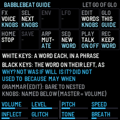
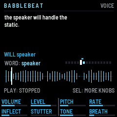
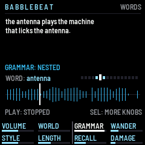

BabbleBeat
A word on every key, and a tiny robotic voice. A third FM-1 firmware beside STRATA and PALINDROME. Sentences are built by grammar rules; the voice is a formant robot that says only the words it knows.
Custom firmware, installed at your own risk. It has not run on a real FM-1 yet. Install · Try it in the browser.
Quick start
- Press a white key. It has a word, and says a phrase about it. Press it again: the same phrase, now and then a new one.
- Press the black key to its right: the same word in another kind of phrase (a question, a "not", a "was").
- Keep playing keys. A word stays on its key; now and then it moves to the next word of its world.
- SEQ puts a new word on the key. REC remembers the key's word; RECALL brings it back into other phrases.
- PLAY babbles about the key's word; HOME stops.
- EDIT, then GRAMMAR (KNOB1): every phrase is built another way, bare to nested.
- SEL steps through the three sets of knobs: VOICE, MOUTH, WORDS. Lost? Hold GLO.

Buttons
| Button | Action |
|---|---|
| PLAY | Babble: one phrase after another about the key's word |
| SEQ | A new word on the key, and a phrase about it |
| ARP | The key's phrase made again |
| REC | Remember the key's word |
| SEL | The next set of knobs: VOICE → MOUTH → WORDS |
| FX | VOICE knobs |
| EDIT | WORDS knobs |
| HOME | Stop speaking and turn off the babble |
| OCT- / OCT+ | The whole voice down or up an octave |
| GLO (hold) | The guide: what every button does, on the screen |
| SAVE, ENV, LFO | Not used; the screen says so |
Keys
A white key is a word. The sixteen take the nouns of the WORLD in order, so neighbouring keys are neighbouring words. A key says a plain statement about its word and keeps it, so you can come back to it. Lower keys speak in a lower voice. The screen shows WORD: and a row of sixteen marks, the tall one the key in use.

A black key is a kind of phrase. It uses the word of the white key on its left:
| Black key, left to right | Kind | Example with mirror (GRAMMAR at PLAIN) |
|---|---|---|
| 1 | WHY? | why does the mirror haunt the static? |
| 2 | NOT | the mirror does not follow the machine. |
| 3 | WAS | the mirror was silver inside the signal. |
| 4 | IF | if the mirror dreams, the filter watches the voltage. |
| 5 | WILL | the mirror will forget the circuit. |
| 6 | IS IT? | does the mirror haunt the engine? |
| 7 | DID NOT | the mirror did not corrupt the voltage. |
| 8 | USED TO | the mirror used to corrupt the static. |
| 9 | BECAUSE | the mirror watches the signal because the terminal sings. |
| 10 | MAY | the mirror may follow the voltage. |
| 11 | WHEN | when the mirror vanishes, the antenna will forget the engine. |
WORLD and the words
BabbleBeat knows about 2,900 words: 1,796 nouns, 512 adjectives and 590 verbs. The nouns are in fourteen worlds. WORLD (EDIT, SELECT) chooses the world the keys draw from; the screen names it as you turn.
| WORLD | Nouns | Such as |
|---|---|---|
| MACHINE, DREAM, BODY, GOTHIC | 12 each | the original hand-made worlds: circuit, ghost, tongue, crypt |
| ANIMAL | 146 | frog, owl, spaniel, walrus |
| PLANT | 80 | grass, poppy, lilac, bramble |
| FOOD | 98 | bean, radish, bacon, butter |
| THING | 220 | kitchen, bridge, painting, sword |
| PLACE | 220 | meadow, island, campus, graveyard |
| MATTER | 220 | mist, smoke, dust, radiation |
| TIME | 104 | dawn, midnight, year, twilight |
| MIND | 220 | longing, boredom, intuition, scorn |
| TALK | 220 | headline, lyric, phrase, verb |
| DEED | 220 | arrival, ballet, merger, removal |
- Neighbouring keys are kin. A world's words are in a family order, so the sixteen keys hold related words (frog, toad, fish, salmon, shark...), and a word that moves (WANDER) steps to a relative.
- Each power-on starts somewhere else in the world, so the keys are not always the same sixteen.
- Turn WORLD into another world and every key takes a new word from it: the key on the screen at once, the others when played.
- Adjectives and verbs are shared by all worlds.
The words outside the first four worlds were chosen by a script, not one by one. Expect the odd strange one.
GRAMMAR
GRAMMAR (EDIT, KNOB1) sets how every phrase on the unit is built: white keys, black keys and PLAY's babble. There are five levels. Turn across one and the phrase on the screen is built again that way and said; each other key follows when it is next played. The screen names the kind and the level under the phrase, for example WHY? NESTED.

| GRAMMAR | Level | A white key | The WHY? key | The NOT key |
|---|---|---|---|---|
| 0–19 | BARE | the strange mirror. | why the mirror? | not the mirror. |
| 20–39 | SIMPLE | the mirror vanishes. | why is the mirror silver? | the mirror is not synthetic. |
| 40–59 | PLAIN | the mirror watches the static. | why does the mirror haunt the static? | the mirror does not follow the machine. |
| 60–79 | JOINED | the mirror waits, but the filter forgets the engine. | why does the mirror watch the signal, and why does the circuit sleep? | the mirror does not swallow the engine, and the engine does not whisper. |
| 80–100 | NESTED | the mirror that opens the robot returns. | why does the mirror that waits watch the speaker when the terminal sleeps? | the mirror that waits does not haunt the robot because the robot is not pale. |
What changes, and how fast
| Knob (WORDS) | Sets |
|---|---|
| WANDER | How often a key's word moves when you play it. It moves one step, to the next word of its world, never a jump. At 0 it never moves |
| DAMAGE | How often a key's phrase is made again when you play it. At 0 a phrase stays until you change it. Past 60 it may be broken instead (a word doubled, dropped, an "again") |
When a white key's word moves, the black key beside it follows the next time it is played.
WORDS — EDIT
| Knob | Control | Function |
|---|---|---|
| KNOB1 | GRAMMAR | How every phrase on the unit is built: BARE, SIMPLE, PLAIN, JOINED, NESTED |
| KNOB2 | WANDER | How often a key's word moves a step; also, other nouns borrowed from outside the world |
| KNOB3 | RECALL | How often the remembered word returns. Past 70 the phrases fix on it and loop back on themselves: "the mirror was, the mirror was pale." |
| KNOB4 | DAMAGE | How often a key's phrase is made again as it is played; past 60 it may be broken instead |
| SELECT | WORLD | Which of the fourteen worlds the keys' words come from. Turned into another world, every key takes a new word from it |
| ALGORITHM | LENGTH | High values can append a further clause (from PLAIN up) |
| PRESETS | STYLE | Statements at low values; mixed in middle; questions at high values |
VOICE — FX
| Knob | Control | Function |
|---|---|---|
| KNOB1 | PITCH | Base pitch for automatic speech |
| KNOB2 | RATE | Phoneme length / speaking speed |
| KNOB3 | TONE | A darker, larger voice to a brighter, smaller one |
| KNOB4 | BREATH | Breath noise in the voiced sounds |
| SELECT | LEVEL | Synthesizer voice volume |
| ALGORITHM | STUTTER | Repeat individual pronunciation codes |
| PRESETS | INFLECT | How much the pitch moves: a lift on each word, a fall at the end, a rise for a question |
MOUTH — SEL
SEL steps VOICE → MOUTH → WORDS. The middle of each MOUTH knob is the voice as it is made.
| Knob | Control | Function |
|---|---|---|
| KNOB1 | SIZE | A small mouth (every resonance higher) to a large one |
| KNOB2 | SLUR | Crisp, to sliding lazily from sound to sound |
| KNOB3 | GAP | The quiet between words: run together, to spaced out |
| KNOB4 | WAVER | How much the pitch trembles |
MASTER always controls volume.
How the sentence engine works
A compact lexicon tags parts of speech. There are twelve kinds of phrase (the statement and the eleven black-key kinds), and each has a form at each of GRAMMAR's five levels. Statements use third-person verbs, and base verbs follow "does", "did", "will" and "may". Verbs that take no object are never given one.
REC keeps a word in a small memory slot; RECALL governs whether a later phrase uses it. WORLD decides the nouns; WANDER can cross worlds. LENGTH can add a further clause. DAMAGE past 60 lets tokens repeat, disappear or be interrupted by "again".
The first four worlds loosely echo an earlier Python WordNet/Dracula experiment and are written by hand. The rest of the words are generated from two public word lists: see the sources and their notices.
Voice limitations
The voice is a small formant synthesizer with a hand-phonemized word list: a glottal pulse and breath noise through four gliding formants, with shaped noise for hisses and stops. It is robotic on purpose, and it is not a general English TTS engine or CHIMERA's modeled vocal tract. There is no text input, no recording, no save/load of patches and no MIDI support in the app yet. The firmware has not run on a real FM-1: the first trials must establish intelligibility.